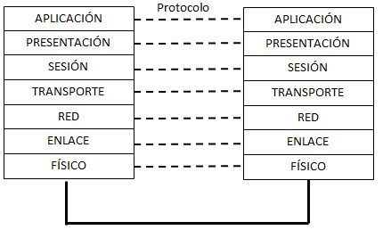

2.1. Capas de OSI
El modelo OSI para intercambio de datos entre dos ordenadores conectados en red fue creado por ISO (Organización Internacional para la Estandarización) formado por comités de estandarización de muchos países con el objetivo de mejorar la compatibilidad entre productos.
El modelo OSI es muy general y no especifica los protocolos que componen cada capa sino más bien las funciones que debía tener cada una. En este modelo se distinguen 7 capas:
1. Capa física
2. Capa de enlace
3. Capa de red
4. Capa de transporte
5. Capa de sesión
6. Capa de presentación
7. Capa de aplicación
En la siguiente imagen se refleja cómo quedaría esta modelo implementado para la comunicación entre dos ordenadores.

Modelo de referencia OSI
Imagen de elaboración propia
CAPA FÍSICA
En esta capa se definen:
- Las características físicas que describen cómo se envían datos a través de una medio de transmisión. Por ejemplo, si lo que hay que enviar son una serie de bits, se define la duración del envío de un bit por el canal, cómo se envía el bit (nivel alto o nivel bajo o una combinación de ambos), si es un cable habrá que especificar los niveles de tensión para el envío de ese bit, etc.
- Las características físicas que describen el interfaz entre la computadora y el medio de transmisión, es decir, se especifica el conector. A modo de ejemplo, un conector RJ-45 es un buen ejemplo. En él quedan especificados todos los aspectos físicos, como las dimensiones, el número de pines, la función que debe tener cada pin, etc.
CAPA DE ENLACE
Si dos elementos de red están conectados a través de un medio de transmisión, dentro de las funciones de la capa de enlace se encuentran el envío de datos libre de errores ya que hay que pensar que la posibilidad de que estos existan es importante. No se puede olvidar que un medio de transmisión puede ser compartido, por tanto, es posible que dos ordenadores traten de acceder al mismo tiempo produciéndose una colisión entre ambos. También se debe pensar que un ordenador puede ser más lento que otro, por tanto, en el envío de datos a través del medio hay que acordar una velocidad para la transmisión de datos. Los datos se envían a través del medio de transmisión enpaquetados. A un paquete de datos de la capa de enlace, se le conoce como trama.
CAPA DE RED
Como función principal de esta capa, se tiene el envío de datos de un origen a un destino . A diferencia de lo que ocurría en la capa anterior, los datos se envían desde un origen a un destino y no tienen por qué estar conectados a través de un medio de transmisión. Es decir, los datos que pertenecen a esta capa pueden pasar por otros elementos de red conocidos como router que se encargan de reenviar los paquetes por el camino adecuado en función la dirección de destino.
La complejidad de las funciones de esta capa aumentan ya que hay que tener en cuenta aspectos como la calidad del servicio que está relacionada con la velocidad en el intercambio de los datos en la red y que determina si se puede llevar a cabo un determinado servicio como una videoconferencia. También hay que tener en cuenta que los datos pueden viajar por redes de distinta naturaleza, por lo que es posible que el tamaño de los paquetes pueden ser diferentes y haya que controlarlo.
CAPA DE TRANSPORTE
La función principal de esta capa es ofrecer a las capas superiores una conexión libre de errores entre un origen y un destino. En el nivel de enlace, se ofreció una conexión libre de errores entre dos elementos de red conectados por un medio de transmisión. Ahora, es posible que haya varios saltos en el camino, por tanto, puede ser que los paquetes tengan un camino diferente para llegar al destino y es posible que lleguen desordenados. Es posible que por el camino se pierdan paquetes y haya que volver a retransmitirlos. Es decir, son muchas las dificultades que se pueden dar y que se resuelven en esta capa.
CAPA DE SESIÓN
En una computadora es posible que existan varias sesiones activas. Por tanto, dentro de las funciones de este nivel está la gestión de las mismas. Por ejemplo, se establecen puntos de referencia en las sesiones que se necesitarán para la recuperación de alguna en caso de interrupción de la conexión.
CAPA DE PRESENTACIÓN
En esta capa se trabaja con el contenido de la comunicación e importa poco los aspectos relacionados con la comunicación en sí. Cada ordenador puede tener su propia forma de representar los datos. Esta capa se encarga de la presentación de la información posibilitando que distintos equipos informáticos puedan tener representaciones internas diferentes. Se manejan estructuras de datos abstractas y se realizan las conversiones oportunas para que esta información se represente de forma correcta en el elementos de red en cuestión.
CAPA DE APLICACIÓN
Esta es la capa que se encuentra en lo alto de la torre de protocolos. Es la que utiliza la aplicación final y es la más cercana al usuario que es el que hace uso de la aplicación. Se encarga de ofrecer el acceso a las capas inferiores. A esta capa no accede el usuario directamente, sino que lo hacen los programas que maneja el usuario simplificando esta labor.
Importante
El modelo de referencia OSI distingue las siguientes capas:
- Capa física: recoge las especificaciones del envío de datos a través del medio de transmisión así como las características de la interfaz entre el elemento de red y el medio de transmisión.
- Capa de enlace: ofrece el envío de datos libre de errores entre dos elementos de red conectados punto a punto.
- Capa de red: ofrece la posibilidad de enviar datos entre un origen y un destino aunque la información tenga que pasar por otros elementos de red. Entre las funciones importantes de esta capa está el encaminamientos de los datos que puede ser estático o dinámico.
- Capa de transporte: La función principal de esta capa es ofrecer a las capas superiores una conexión libre de errores entre un origen y un destino, aunque para ello haya que pasar por otros elementos de red.
- Capa de sesión: se encarga de la gestión de las sesiones activas de un ordenador.
- Capa de presentación: maneja estructuras de datos abstractas y posibilita que cada ordenador pueda utilizar su propia representación de la información.
- Capa de aplicación: se encarga de ofrecer a los programas de usuario el acceso a las capas inferiores. Se encuentra en lo alto de la torre de protocolos.